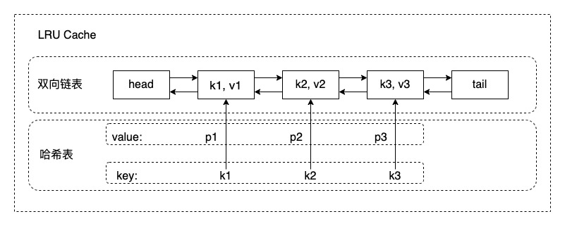

Design and implement a data structure for Least Recently Used (LRU) cache. It should support the following operations: get and put.
get(key) - Get the value (will always be positive) of the key if the key exists in the cache, otherwise return -1. put(key, value) - Set or insert the value if the key is not already present. When the cache reached its capacity, it should invalidate the least recently used item before inserting a new item.
The cache is initialized with a positive capacity.
Could you do both operations in O(1) time complexity?
1、O(1) 的 get 和 set？
那就只能用 哈希表 数据结构了。
2、删除过期的 key?
也就说，key 是 有序的 （按 get/set 的时间排序），所以需要一个有序的数据结构来存储 key。满足有序的数据结构有数组、链表、搜索树、跳表等。
3、删除和插入 key 也需要 O(1)？
那就只有 链表 了，实现过程中发现 双向链表 更合适，因为需要用到节点的左节点指针。
综上，需要 哈希表 + 双向链表 两个数据结构来实现 O(1) 的 LRU Cache。画个图直观感受下：

小技巧，双向链表添加头尾两个 dummy 节点，可以省掉好多 if-else
from typing import Dict
class LinkedListNode:
def __init__(self, key: int, val: int):
self.key: int = key
self.val: int = val
self.pre: 'LinkedListNode' = None
self.next: 'LinkedListNode' = None
class LRUCache:
def __init__(self, capacity: int):
self._size = 0
self._capacity = capacity
self._head = LinkedListNode(-1, -1)
self._tail = LinkedListNode(-1, -1)
self._head.next = self._tail
self._tail.pre = self._head
self._map: Dict[int, LinkedListNode] = dict()
def get(self, key: int) -> int:
node = self._map.get(key)
if node:
self._move_node_to_front(node)
return node.val
return -1
def put(self, key: int, value: int) -> None:
if key in self._map:
self._map[key].val = value
self._move_node_to_front(self._map[key])
else:
self._insert_node(key, value)
def _move_node_to_front(self, node: LinkedListNode):
pre, next_ = node.pre, node.next
pre.next, next_.pre = next_, pre
node.next = self._head.next
node.pre = self._head
self._head.next.pre = node
self._head.next = node
def _insert_front(self, key, val):
self._size += 1
node = LinkedListNode(key, val)
self._map[key] = node
node.next = self._head.next
node.pre = self._head
self._head.next.pre = node
self._head.next = node
def _delete_ex(self):
ex_node = self._tail.pre
ex_key = ex_node.key
self._tail.pre = ex_node.pre
ex_node.pre.next = self._tail
ex_node.pre = None
ex_node.next = None
del self._map[ex_key]
self._size -= 1
def _insert_node(self, key, val):
if self._size >= self._capacity:
self._delete_ex()
self._insert_front(key, val)